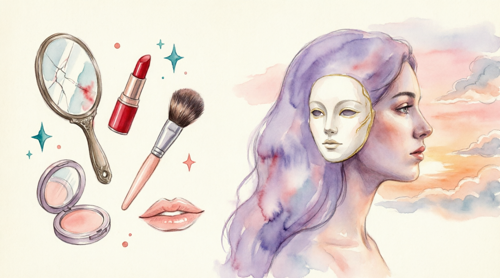

Nobody looks human anymore… and it's getting scary
1. Do you think beauty standards today are more or less realistic than 20 years ago?
2. Have you ever noticed celebrities starting to look alike? What do you think is the reason?
We've reached a strange point in beauty standards where the more perfect you look, the less beautiful you are. Wild take, but hear me out. Some of the most beautiful women in the world don't look like themselves anymore. They've become so snatched, so sculpted, so symmetrical, and now their faces all look perfect, but not in a good way. So, let's get this straight. I'm kind of nervous about this video because the last thing I want to do is speak down on a woman's face. That's brutal. But something about the new standard face doesn't sit right anymore, literally. And there's young girls growing up all around the world thinking that this is right.
We're going to talk about the almost pretty girl. The girl who has every feature that can make her beautiful according to beauty standards, but these features have literally cut out the warmth, the emotion, and that little bit of life that used to make someone beautiful. This video is going to be a whole lot of tough love. So, if you cannot stand the heat, the oven is going to be on 450°, so I'm sorry. You're going to have to get out of the kitchen. Welcome to the girl talk to know you need it. I'm not saying you have to subscribe. You're classy. I know you don't just give those away for free. But hopefully at the end of this video, we become bestie enough for you to take that next step.
Back then, beauty wasn't perfect, but that's exactly what made it perfect. Since celebrities have always been the blueprint for what beauty is supposed to look like, they're our main focus for today. And in the early 2000s to 2010s, not only could you see women with natural beauty, you could see faces that looked completely different from each other. Before Instagram face, beauty used to be bold. Faces were striking and complex, and you could actually remember them, no one trying to blend in with one another, and no one looked the same. There used to be so much mystery and diversity to women. Faces were textured, asymmetrical, and expressive. You could open magazines like InStyle, Essence, and Teen People, and see girls and women like Beyonce, Mandy Moore, Kiki Palmer, Amanda Bines. And I'm not going to sugarcoat this and make it seem like the beauty standards back in the day couldn't be toxic. Thigh gaps and cheekbones were still glorified. Let's get that settled.
Danielle, you went to the dentist, but you refused to have your gap closed. Do you really think you can have a CoverGirl contract with the gap in your Mouth? Yes, why not? This is all people say. It's easy covergirl. It's not marketable. Yeah, just a little bit is okay, but I don't want to completely close it. Well, I guess she just left a gap wide open for another girl, baby. I agree.
Heroin chic is a style popularized in the early 1990s fashion and characterized by pale skin, dark circles underneath the eyes, emaciated features, androgyny, and stringy hair. All traits associated with the abuse of or other drugs. A 1996 article in the LA Times stated that the fashion industry had a nihilistic vision of beauty that was reflective of drug addiction.
I'm just going to say this. If the beauty standards back in the day weren't toxic, women wouldn't look like how they look today. Moral of the story, women used to look like themselves. And I know that kind of sounds like an oxymoron because of course women look like themselves, but when we take a look at today, it makes sense why I'm saying that. Over time, natural beauty started to feel outdated, almost like it wasn't enough to just look like yourself.
Most of my life, I felt self-conscious because I didn't have as much chest as other grown-up women. So, I went to the hospital and had what they call plastic surgery. But why? What was wrong with the way you were? But I just never felt good about myself the way I was.
As the beauty standards started to get more aggressive and it started to get more accessible in a way that made a lot of women feel like they had to have it, like they had to keep up. Female celebrities are pretty much in an impossible position where they're required to look perfect and look youthful forever in order to have a career. But they can't look too overdone or they'll be plastic and they won't look effortless and that will damage their career because they won't be able to emote and make the facial expressions that they need for acting. I mean, they're damned if they do, damned if they don't. It's no wonder that celebrities are going to seemingly any length to look young and flawless forever.
Once celebrities and influencers started showing off these upgrades, people wanted those results. I went to Chris Jenner's last guy cuz the new guy is a million for a facelift. For a facelift and the ladies are lining up. These psychoses are calling and using code words and passwords. And you've got to know the password to get Chris Jenner's guy for a million bucks. What? Most people have a shopping wish list. I have a surgery wish list. Here are all the surgeries, treatments, etc. that I would get if money wasn't an issue. I want this nose. I need this nose. I would pay to have this nose. From the nose jobs to the lip fillers, the brow lifts, and yes, Ozempic has a lot to do with this also, but we'll get to that later. The new go-to look started to become more sculpted and almost exaggerated. And as it became that, it also became more tempting because now you didn't have to be born with it. You could just buy it. So that's when we started to see this unsettling movement of women swapping out their natural beauty for something a bit more manufactured.
I got my third facelift. it. I mean, they yanked my face and I said, "Give me a good yank." I go, "Doctor, I don't want to see you in six months. Give me a good get in there and just start pulling, yanking." Now, this is where it gets really interesting because people aren't just talking about bad surgery. They're talking about the weird uneasy feeling they get from just looking at it. Today, there are countless women with the exact facial features we were taught to want. The sharp jawline, the high cheekbones, the big pouty lips, but instead of looking stunning, something looks off. Um, people's faces are really starting to scare me. Yeah, your lips don't need to look like they're trying to escape.
And I noticed Nicole Kidman having a weird mouth or something wrong with her face in Aquaman. I literally could not enjoy the movie when she was on screen because it was like something was going on. I don't know if it was like too much Botox because like her face didn't have like movement or anything, but this was terrifying. And y'all, it's so hard to put it into words without sounding or coming off as rude. But let's be real, a lot of women nowadays, they don't look human. They don't look like a real person. They almost look like wax figures of themselves. Women don't really look like human beings anymore. Hundreds of thousands of perfectly beautiful, healthy women in trying to become even more beautiful, even more perfect are literally disfiguring their faces with filler. Mara Lago is getting a lot of plastic surgery work done, right? Whether it's actually reconstruction or you're just getting injections here, there, and everywhere. But these people do not look like human beings anymore. It's a very uncanny valley.
Take Demi Lovato for example. She was introduced to the media as a child star, appearing in movies and TV shows like Camp Rock, Barney and Friends, and Sunny with a Chance. Hey, I'm Demi Lovado from Camp Rock. Hello. And you're watching Disney Channel. And behind the scenes, she was struggling with something that not even a lot of adults can handle. From eating disorders to battles with addiction, Demiy's journey hasn't been easy. So seeing her healthy and thriving today is amazing. Once I relapsed, the floodgates were open. Within a couple weeks, I called a drug dealer and I was like, "Do you have and he said no, but I have and I was like the 27-year-old went on to explain how she's come to be more accepting of her body. Now, when I look in the mirror and I start to have a negative thought, so what I say to myself is, "Nope, you're healthy and I accept you."
When someone's been through that much, it's not surprising they probably want to look like a completely new version of themself. So, as she's reintroduced herself to us today, people have started to talk. That is not Demi Lovado. And I don't care what anybody says. She went through a rough patch and I'm all about healing, but that Demi Lovado does not give me real person vibes. Something about her new look looks unfamiliar. Her face is a bit more uplifted. Cheeks are a bit more hollowed and her lips are a lot more pouty, almost to the point where it seems like she can't even close them. There's almost an uncanny, unemotional stiffness to her face.
When I was a pre-teen, the beauty standard was hero and chic. It was a very very very frail, thin looking people. The beauty standards were just so unrealistic. And so I wanted to be that role model for myself.
After the scandal, the CEO decided to all unnecessary expenses to save the company's reputation.
To improve his health, he had to processed sugars from his diet completely.
The director told the editor to the slow scene, as it disrupted the film's pace.
She knew she had to be and ask for the promotion she deserved.
For the party, he chose a , emerald-green suit that turned everyone's heads.
The activist's speech inspired many to join the cause.
Wearing jeans to the gala made him feel as everyone else was in tuxedos.
Her accent sometimes made her feel when speaking in meetings.
He started to feel about his stringy hair, so he booked a haircut.
The architect presented the for the new community center.
Her business plan served as a for others wanting to start a sustainable company.
The treaty was considered a for international cooperation on climate change.
She didn't want to the news — the project had failed and we had to start over.
He tried to his criticism with a compliment, but she still felt upset.
Parents sometimes difficult truths to protect their young children.
The celebrity's secret to looking involved good genetics and a lot of sunscreen.
This new moisturizer claims to help you look by reducing fine lines.
He looks for his age, often being mistaken for someone a decade younger.
She believed her success must her relentless work ethic.
His sudden allergy must the new plants in the garden.
The strange noise seems to the old pipes in the building.
The minimalist black dress is her for important interviews.
For a quick, polished appearance, a sleek bun is my .
His on weekends consists of a vintage band t-shirt and jeans.
According to the video, how have beauty standards changed over time, and why does this change matter?
How much pressure do you feel to keep up with the flawless and often overdone looks promoted on social media? Do you ever feel self-conscious comparing yourself?
OR
What is your go-to look for an important event? Do you prefer to blend in, or to be bold and stand out?
1. The video describes a shift from diverse, "striking and complex" faces to a homogenous, "sculpted" ideal. Why do you think this shift happened? What roles have social media, cosmetic technology, and celebrity culture played?
2. Where do you think the line is between looking polished and looking too overdone?
3. What reaction do you have to exaggerated features like pouty lips — admiration, discomfort, or indifference?
4. Growing up, who or what acted as your blueprint for beauty or attractiveness?
5. Have you ever felt that your natural look was starting to feel outdated compared to what's trending online?
6. Can you recall a time when you felt particularly self-conscious about your appearance? What triggered it?